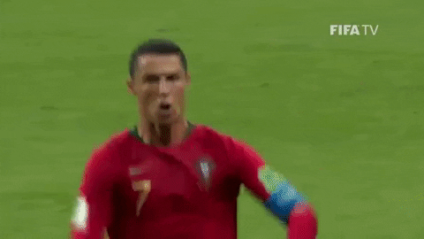
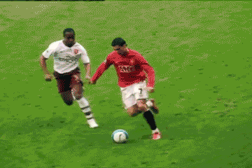

ক্রিস্টিয়ানো রোনালদোকে (Cristiano Ronaldo) ফুটবল ইতিহাসের অন্যতম সেরা বা GOAT (Greatest of All Time) বলার
পেছনে বেশ কিছু অকাট্য যুক্তি ও ঐতিহাসিক রেকর্ড রয়েছে। ভক্ত এবং ফুটবল বিশ্লেষকরা মূলত নিচের কারণগুলোর জন্য
তাকে এই খেতাব দিয়ে থাকেন:
১. অবিশ্বাস্য গোলস্কোরিং রেকর্ড (All-Time Top Scorer)রোনালদো ফুটবল ইতিহাসের অফিশিয়াল ম্যাচে সবচেয়ে বেশি
গোলের মালিক (৮৫০টিরও বেশি গোল)। তিনি আন্তর্জাতিক ফুটবলেও পুরুষদের মধ্যে সর্বকালের সর্বোচ্চ গোলদাতা। যেকোনো
পজিশন থেকে—ডান পা, বাম পা, হেড, ফ্রি-কিক কিংবা দূরপাল্লার শটে গোল করার এক অনন্য ও বহুমুখী দক্ষতা তার রয়েছে।
২. ভিন্ন ভিন্ন লিগে আধিপত্য (Versatility & Adaptability)অনেকে রোনালদোকে এগিয়ে রাখেন কারণ তিনি ক্যারিয়ারে
শুধু একটি ক্লাবে আটকে থাকেননি। তিনি বিশ্বের শীর্ষ তিনটি ভিন্ন লিগে (ইংল্যান্ডের ম্যানচেস্টার ইউনাইটেড,
স্পেনের রিয়াল মাদ্রিদ এবং ইতালির জুভেন্টাস) খেলেছেন এবং প্রতিটি লিগেই চ্যাম্পিয়ন হওয়ার পাশাপাশি সর্বোচ্চ
গোলদাতা ও সেরা খেলোয়াড় হয়েছেন।
৩. চ্যাম্পিয়ন্স লিগের রাজা (Mr. Champions League)ক্লাব ফুটবলের সবচেয়ে মর্যাদাপূর্ণ আসর 'উয়েফা চ্যাম্পিয়ন্স
লিগ'-এ রোনালদোর রেকর্ড রূপকথার মতো। তিনি ইতিহাসের সর্বোচ্চ ৫ বার এই ট্রফি জিতেছেন এবং টুর্নামেন্টের
সর্বকালের সর্বোচ্চ গোলদাতাও তিনি।
৪. আন্তর্জাতিক সাফল্য (International Success)পর্তুগাল জাতীয় দলের হয়ে রোনালদো দুটি বড় টুর্নামেন্ট
জিতেছেন—উয়েফা ইউরো ২০১৬ এবং উয়েফা নেশনস লিগ ২০১৯। তুলনামূলক কম শক্তিশালী দল নিয়েও পর্তুগালকে ইউরোপের সেরা
বানানোয় তার নেতৃত্ব বড় ভূমিকা রেখেছিল। ৫. অসাধারণ পরিশ্রম ও দীর্ঘায়ু (Elite Longevity & Fitness)রোনালদোর
ফুটবলার হয়ে ওঠার গল্পটা নিখুঁত প্রতিভার চেয়েও কঠোর পরিশ্রম, ডেডিকেশন এবং ফিটনেসের ওপর গড়া। সাধারণত ফুটবলাররা
৩০ পার হলেই ফর্ম হারাতে শুরু করেন, কিন্তু রোনালদো তার ৪০ বছর বয়সের কাছাকাছি এসেও অবিশ্বাস্য ফিটনেস ধরে রেখে
মাঠে গোল করে যাচ্ছেন এবং বয়সকে বুড়ো আঙুল দেখাচ্ছেন।৫টি ব্যালন ডি'অর জয়ী এই ফুটবলার তার অদম্য মানসিকতা ও বড়
ম্যাচে ম্যাচ জেতানোর ক্ষমতার কারণেই বিশ্বজুড়ে কোটি কোটি ভক্তের কাছে সর্বকালের সেরা বা 'GOAT'।